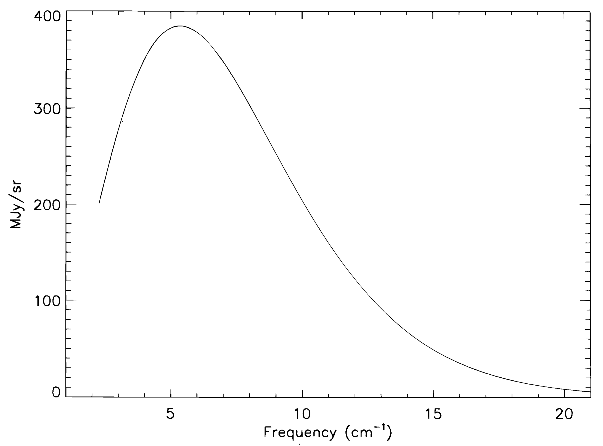

How did the universe originate and evolve? Over the past several decades, theoretical and experimental cosmology has advanced drastically and attempted to answer this and other prodigious questions with high precision. From Einstein’s general relativity to modern highly sensitive observations of the cosmic microwave background, we have seen an evolution in testable theories that aim to answer fundamental questions about our universe.
The “concordance" or standard \(\Lambda\)CDM model of cosmology is the leading model of our universe. It encapsulates the following paradigm: our universe is a Euclidean one (i.e. has a flat geometry) composed of only about about 5% normal matter. The rest is about 70% dark energy (\(\Lambda\)), which is accelerating the expansion of the universe but is still very poorly understood, and about 25% non-baryonic, non-relativistic (or “cold") dark matter (CDM), which is a major research subject in modern cosmology. Species such as neutrinos and photons contribute a small fraction of a percent to this distribution. Indeed, the majority of the photon energy density is actually from the cosmic microwave background! The current most widely-accepted theory of the history of the universe involves a hot Big Bang model wherein a hot, dense universe expanded and cooled over time. When the universe was cool enough to start forming neutral hydrogen, the cosmic microwave background (CMB) photons started free streaming about 375,000 years after the beginning of the universe. This model successfully explains several key observations including (The Planck Collaboration 2020a):
cosmic expansion (Hubble’s law, 1920s (Hubble 1929))
cosmic microwave background (Penzias and Wilson, 1964 (Penzias and Wilson 1965))
light element abundances (BBN - Alpher, Gamow, Herman (Alpher, Bethe, and Gamow 1948))
formation of large-scale structure and galaxies
The most conclusive evidence of this model and theory has been the CMB, which permeates the entire universe uniformly to 1 part in \(10^{5}\). Arno Penzias and Robert Wilson at Bell Laboratories discovered the CMB quite accidentally with the Holmdel horn antenna back in 1964 (Penzias and Wilson 1965). Much later in the 1990s, the Far InfraRed Absolute Spectrometer (FIRAS) on the Cosmic Background Explorer (COBE) satellite measured the CMB spectrum as shown in Figure (see PDF). There are also anisotropies in the CMB – small temperature fluctuations to 1 part in \(10^{5}\) suggest extremely spatially isotropic radiation. Over time with efforts from both space-based satellites (e.g. the Wilkinson Microwave Anisotropy Probe (WMAP) and Planck) and ground-based observatories (e.g. the Atacama Cosmology Telescope (ACT), BICEP, South Pole Telescope (SPT), and POLARBEAR), anisotropies in CMB temperature and polarization have been mapped to great precision over many angular scales.
To explain the the current cosmological model’s intrinsic inconsistencies (e.g. the homogeneity, isotropy, and flatness of the modern universe on very large scales), the theory of inflation was adopted alongside the Big Bang paradigm. Seed perturbations, or quantum fluctuations, in the fabric of spacetime sourced from a period of rapid expansion (“inflation") eventually grew to form the large scale structure we see today via gravitational instability. For a more detailed and technical description of cosmology, please refer to Chapter 2.

Upcoming ground-based experiments such as Simons Observatory (SO) and CMB-Stage 4 (CMB-S4) will hit unprecedented sensitivities and provide valuable cosmological information in the coming decades. They also provide the tools and technical readiness for space-based missions to reach sensitivities that are more difficult to achieve on earth with atmospheric interference. As described in the Astro2020 decadal survey, space observations will be necessary for the lowest systematics and best Galactic and extragalactic foreground separation with a much wider range of observing windows (20-800 GHz) across angular scales (National Academies of Sciences, Engineering, and Medicine 2023). The largest angular scales (low \(\ell\)) are in greatest need of a space mission for measurements of reionization features, which require good noise stability and are very difficult for ground-based experiments to achieve. Additionally, residuals after foreground cleaning seen in ground-based experiments will need to be tested statistically on multiple patches of the sky, and a space observatory will provide exactly this. Ground-based experiments like SO and CMB-S4 are aiming to achieve high signal-to-noise maps, and a space-based observatory would vastly improve upon data analysis that currently relies on e.g. Planck. The Astro2020 survey also agreed that momentum in ground-based experiments and development of technologies in the coming decade will determine a future probe mission in the 2030s, which would serve as a complement to CMB-S4.
The field is moving towards large-scale technical efforts to make multichroic (i.e. multi-frequency) observatories covering many angular scales to yield higher and higher sensitivity maps. We will be able to study particle physics beyond the Standard Model by constraining the sum of neutrino masses, probing the nature of dark energy and dark matter, and enabling a model-independent search for light relic particles from the early universe. Highly sensitive CMB instruments must untangle the effects of gravitational lensing perturbations and various galactic and extragalactic foregrounds that affect CMB signals as they journey across space and time to our detectors (Baleato-Lizancos et al. 2022; K. N. Abazajian et al. 2016; The Simons Observatory Collaboration 2019; Abitbol et al. 2021). Ground-based experiments have the added challenge of characterizing atmospheric and terrestrial effects (The Simons Observatory Collaboration 2019; K. Abazajian et al. 2019; P. A. R. Ade et al. 2016). Data is also affected by instrumental systematics and intrinsic white noise (e.g. (Gudmundsson et al. 2021; Salatino et al. 2018; Gallardo et al. 2018)). While future space observatories are required for the highest precision measurements, we must use ground-based experiments to understand instrumental systematics, make scalable low-risk technologies, and continue investment in readiness for such missions.
These large-scale research and development efforts come with huge technical challenges. Higher sensitivities require more detectors on the sky as we reach our limits on single-pixel efficiencies (see Chapters 3 and 5 for a more detailed discussion on photon-noise dominated detectors). SO is fielding over 68,000 detectors, and CMB-S4 will reach 500,000 detectors on the sky. These require compact optical coupling designs, complex focal plane architecture, and innovative detector readout strategies so that associated noise levels remain subdominant (see Chapter 5 for discussions on readout). It is truly an exciting time to be a part of the CMB community as we chase unprecedented sensitivities and novel science goals.
This thesis is divided into four main sections: (1) scientific background and motivation; (2) integration, testing, and deployment of a Simons Observatory (SO) small aperture telescope (SAT); (3) design, construction, and testing of focal planes for cosmic microwave background (CMB) experiments; and (4) how to observe the CMB with these telescopes. We will largely focus on the Simons Observatory, with some work applicable for other upcoming experiments like LiteBIRD and CMB-S4.
We have made an effort to make each chapter somewhat stand-alone so that it can be read independently if needed, but some references to other sections will be rather unavoidable! This chapter provides an overview of the cosmological motivation and this dissertation. Chapter 2 reviews CMB theory to provide a framework for the rest of the thesis. Chapter 3 briefly describes the state of the field, what sensitivities modern instruments are reaching for, and how to understand them. It also contextualizes the Simons Observatory experiment, with an overview of SO science and instruments. Chapter 4 goes into detail about the SO small aperture telescopes, with a focus on the Ultra-High Frequency (UHF) telescope that was integrated and tested at Berkeley and began Chilean integration in January 2024. The current status of the experiment and the UHF SAT is provided as well. Chapter 5 discusses the structure of focal planes used in CMB experiments, and considerations taken when building complex detector arrays. Details on the SO Low Frequency (LF) arrays are provided, with some CMB-S4 and LiteBIRD applications used as examples for pedagogical purposes. Chapter 6 briefly describes considerations for CMB observations, with a focus on SO scan strategy. Finally Chapter 7 provides a brief summary of this dissertation.